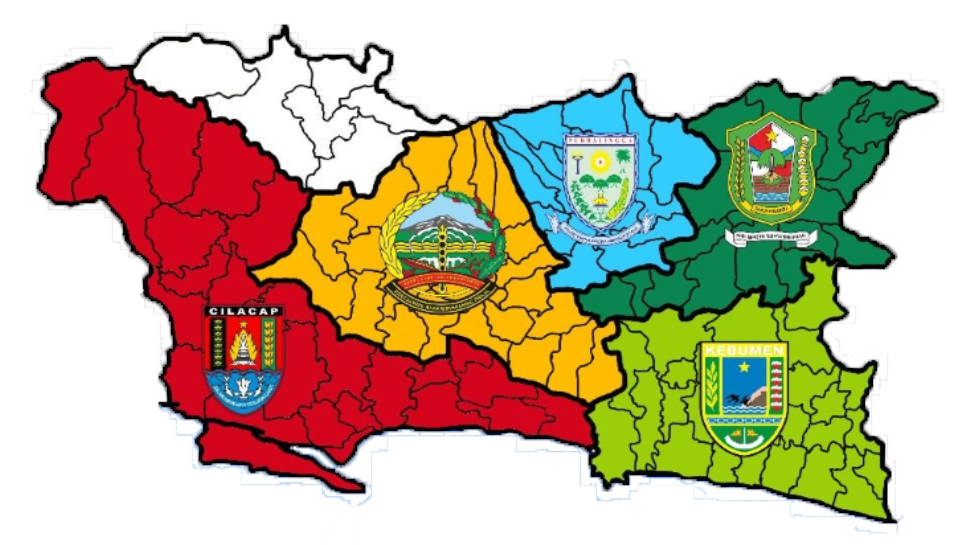

Supaya orang Suku Jawa Banyumasan mempunyai firman-Nya dalam bahasa mereka
Sejarah
Paseban adalah singkatan dari Paguyuban Senthir Budhaya Banyumasan. Senthir bagi
orang Suku Jawa Banyumasan adalah pelita yang sangat berguna untuk menembus kegelapan.
Melalui Paseban, kami yakin Tuhan akan memakai kami menjadi alat-Nya untuk menjadi
terang bagi suku kami tercinta.
Paguyuban ini terbentuk tanggal 1 Mei 2005 dan diresmikan tahun 2008 dari kerinduan
sekelompok kecil anak-anak tuhan asli Suku Jawa Banyumasan yang rindu adanya media
komunikasi dengan Tuhan untuk orang-orang Suku Jawa Banyumasan. Awalnya kami menerjemahkan
Kitab Yunus pada tahun 2005, dimana dalam kitab itu diceritakan tentang pertobatan
orang-orang Niniwe dari hasil pekabaran nabi Yunus. Kami juga sangat merindukan ada Kabar
Baik bagi orang-orang Suku Jawa Banyumasan.
Dalam perjalanan waktu, Paseban mendapat partner pelayanan dari Wycliffe Bible Translators
dan Yayasan Kartidaya yang sangat membantu dalam pelayanan penerjemahan Alkitab. Paseban
juga mengadopsi sistem pemuridan untuk jemaat gereja Yeom Yeong dari Korea Selatan, yang
bisa membantu pelayanan dan pertumbuhan iman. Pelayanan Paseban mencakup semua orang dari
Suku Jawa Banyumasan yang tersebar di lima kabupaten yaitu: Banyumas, Cilacap, Kebumen, Purbalingga,
dan Banjarnegara.

Peta Barlingmascakeb
Visi dan Misi PASEBAN
Visi
Membawa Terang Bagi Banyumas
Menjangkau suku Banyumasan dan memperlengkapi mereka untuk dapat hidup dalam kebenaran Firman Tuhan.
Misi
1. Menyediakan dan menyebarluaskan Alkitab dan bagian-bagian Alkitab dalam Bahasa Banyumasan.
Melakukan penerjemahan Alkitab dalam bahasa Banyumasan dan menyebarluaskan Alkitab kepada suku
Banyumasan agar mereka lebih memahami kebenaran firman Tuhan dengan baik.
Membuat cerita bagian Alkitab lisan (OS) dalam bahasa Banyumasan agar orang yang kurang minat
membaca bisa memahami firman Tuhan dengan baik.
Mengadakan pelatihan aksara kepada masyarakat yang belum dapat membaca atau menulis, sehingga
dapat membaca dan memahami sendiri isi Alkitab dalam bahasa Banyumas.
2. Membantu suku Banyumas (termasuk gereja-gereja) untuk mencintai Alkitab dan hidup dalam Kebenaran Alkitab.
Melakukan Pendalaman Alkitab, Persekutuan Doa, Pemuridan, Kelompok Persekutuan Cerita (KPC) di gereja-gereja.
Melakukan Etno musik dengan menciptakan lagu-lagu rohani dalam bahasa banyumas.
Mengisi ibadah di gereja-gereja dalam bahasa Banyumas.
3. Terlibat dalam pelayanan budaya di Banyumas.
Mengadakan penelitian mengenai Banyumas baik secara sosial maupun geografis.
Ikut melestarikan budaya Banyumas, dengan memasukkan unsur-unsur budaya dalam kegiatan-kegiatan Paseban.